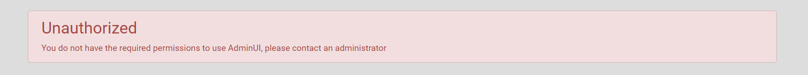

Users without any permissions will be greeted with an unauthorized screen after logging in.

Currently, there are three permissions available, each giving access to different actions within AdminUI:
User ManagerThis permission grants control over User and Role managementIdentity Server ManagerThis permission allows users to create and modify ClaimTypes, Clients, Identity Resources, and Protected ResourcesAllThis permission allows all of the above and control over Access Policy Management
By default, the 'AdminUI Administrator' role is set up by default with the All permission.This mapping cannot be removed.